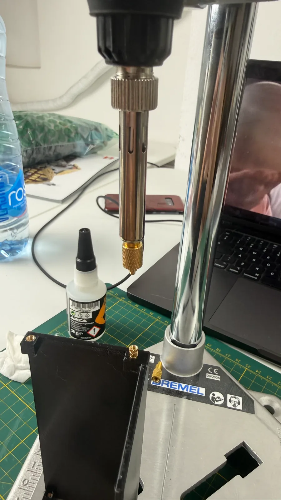
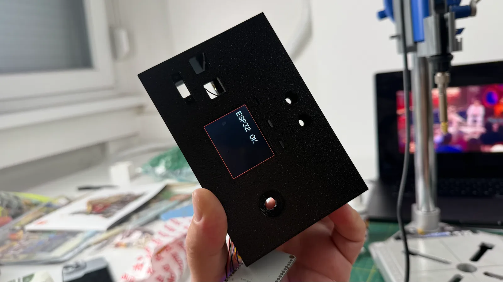
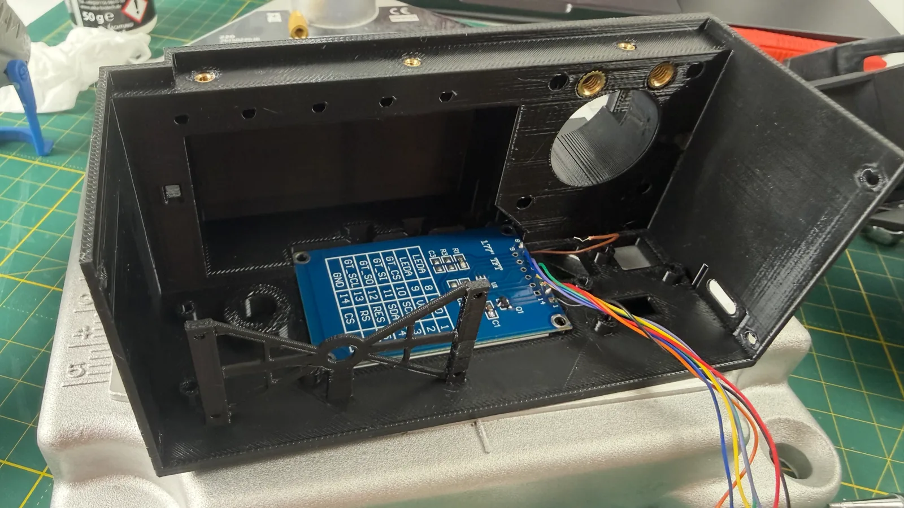

дэнчик
EN
☾
← все заметки
04.08.2026
#слайдер #3д-печать
Вернулся к работе над слайдером. Распечатал корпус и вплавил в него латунные втулки.

Вклеил экран.


Сейчас занимаюсь кнопками — почему-то до конца не хотел браться за проработку этого узла, но, видимо, пора.
Комментарии
Комментарии